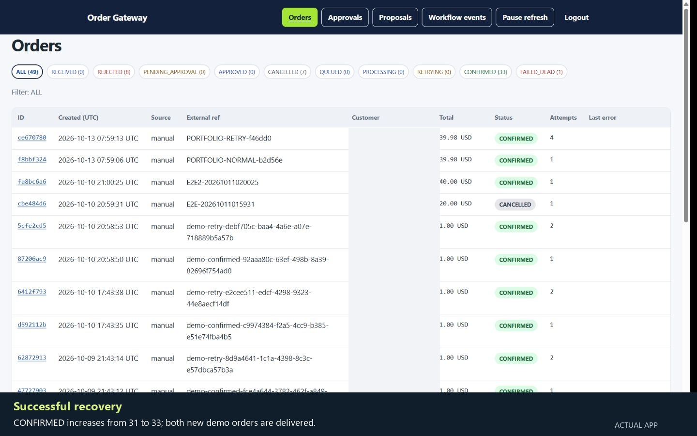

CUSTOM API ENGINEERING · RECORDED LOCAL DEMONSTRATION
Order Gateway API
Historical recording: 13 October 2026. The current case study adds the later real Shopify-to-Odoo test and AWS deployment checks. Read the dated verification summary.
Durable ERP delivery, human approval for sensitive actions and an audit view operators can inspect.

The business problem
An accepted order can be delayed or rejected by an ERP. Repeated requests can create duplicates, and cancellations or inventory adjustments need clear authorization. Operators need to see the current state, the reason for failure and what happened next.
A custom engine with operational controls
FastAPI validates canonical orders and computes totals using decimal arithmetic. PostgreSQL commits the order, delivery job, idempotency response and audit events together. A separate Python worker calls the selected ERP adapter; temporary failures use exponential backoff with jitter, exhausted jobs remain visible for manual recovery.
Governed workflows check operator, approver and admin API-key roles. Large governed orders can wait for approval; cancellation and stock adjustment require a different approving key. Proposals are validated drafts and cannot call an ERP directly. The default proposer uses rules; the optional Anthropic proposer is not recorded as live-API verified.
Fresh recording of the actual interface

The 42-second edit combines two actual captures. The manual mock demonstration shows retries and successful recovery, including a brief counter zoom. The signed synthetic Shopify fixture then shows the public webhook path and its successful delivery. Customer fields are concealed; no screen or result was fabricated.
Verified scope
- Fresh mock delivery and recovery, 13 October 2026. Two USD 39.98 synthetic orders confirmed. The first delivered on attempt 1; three controlled HTTP 500 failures preceded confirmation on attempt 4 for the second. Identical manual replay reused the original order.
- Public signed webhook, 13 October 2026. Tunnel health returned HTTP 200; an unsigned request returned 401 without changing rows. One signed synthetic orders/create fixture was accepted and confirmed through mock ERP on attempt 1. Exact replay returned the same order ID, with one mock outcome. This was not an order emitted by Shopify.
- Existing data preserved. Fingerprints verified that every pre-existing row in all ten business tables remained unchanged. The session added three labeled synthetic orders; total orders increased 47 → 50 and confirmed orders 31 → 34.
- Separate recorded local Odoo operations. S00044 was confirmed and then cancelled through governed approval. Another recorded run increased stock 0 → 10 and applied a signed shipment 10 → 7; replay changed no stock. These Odoo results are separate from this mock recording.
- Existing CI evidence. The published commit’s 11 October 2026 run passed 284 tests; one opt-in live Odoo test was skipped. At this recording checkpoint, the documented real Shopify development-store test reached mock ERP. The owner subsequently demonstrated a real-store order reaching confirmed Odoo on 15 October; see the current case study.
Limits and intended use
The recording above is a local integration demonstration from 13 October. A single-host AWS demonstration was subsequently deployed and checked on 15–16 October; this does not establish production certification, high availability or sustained capacity. Original order routes are open by default unless key authentication is enabled; the AWS checks verified required API authentication. The admin uses a shared token. Only the governed create-order route applies the approval threshold.
Known limits include stale-worker results without attempt fencing, non-atomic Odoo lookup/create, overlapping stock operations, and interrupted approvals requiring manual recovery. Shipments use inventory-count updates and do not implement a complete warehouse fulfilment flow or cumulative shipped-quantity checking. Odoo outage handling and the optional live AI proposer remain unverified.
An earlier fixture recorded a gateway/Odoo total difference (20 versus 23). The later real-store fixture matched at USD 60.00 across the screenshots. These are different tests; general tax, discount and financial reconciliation are not claimed. Gmail and WhatsApp notification evidence belongs to the n8n implementation.